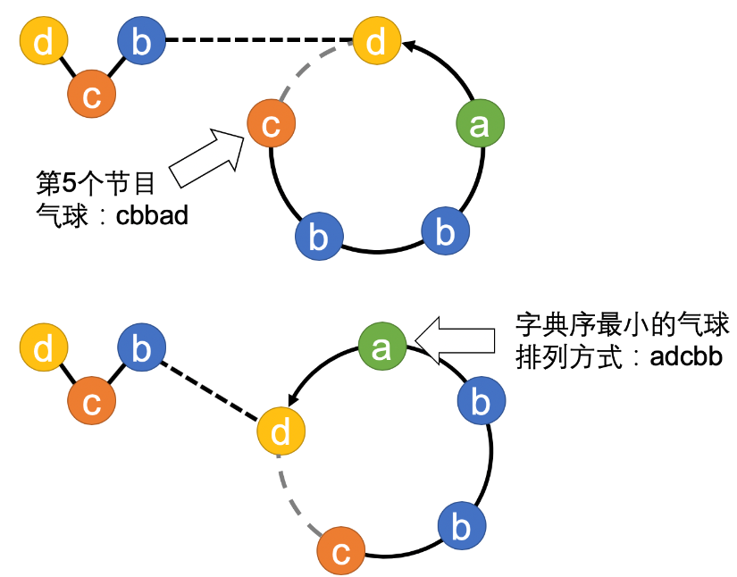

题目背景
JYY 和探险队顺利完成了火星上的任务。在离开前，探险队正好赶上了火星人一年一度最盛大的节日「气球节」。然而，火星人遇到了每年一度的麻烦：怎样最美观地摆放气球。JYY 决定请你设计算法帮助火星人解决这个问题。
题目描述
在庆典开始前，火星人会把气球准备好并串在一根绳子上。气球按顺序排列可以看成是一个由小写字母组成的长度为 $n$ 的字符串 $S$。然后，火星人会按照字符串的顺序逐个把气球加入到一个庆典的圆环上，并且表演一个节目庆祝。
下图展示了一串气球cbbadbcd在进行到第 $5$ 个节目时的情形，此时在庆典环上的气球是cbbad。

为了让每个节目都更好看，火星人希望在每个节目开始前调整气球在环上的顺序，使得每个节目的气球排布都最美观。对于一组气球（一个字符串），火星人认为最美观的字符串是庆典圆环上按绳子方向读出字典序最小的字符串，例如对于cbbad，共有 $5$ 个读出字符串的位置：
cbbad（$i=1$）；
bbadc（$i=2$）；
badcb（$i=3$）；
adcbb（$i=4$）；
dcbba（$i=5$）。
如果有多个字典序最小的字符串，火星人希望找出离绳头最近的那个（即 $i$ 最小的那个）。更严谨地说，对于字符串 $T$，定义
$T_i = T[i\ldots |T|] :: T[1\ldots i-1]\ (1\le i \le |T|)\textrm{，}$
其中 $::$ 是字符串的拼接操作。定义 $f(T)$ 为最小的 $i$（$1\le i \le |T|$）满足$T_i = \min\{T_1,T_2,\ldots,T_{|T|}\}$。
JYY 希望你帮助他设计一个算法，让火星人每个节目的气球排列都最美观，即对于给定字符串 $S$ 的每一个前缀 $S[1\ldots i]$（$1\le i \le |S|$），求出 $f(S[1\ldots i])$。
 Comet OJ
Comet OJ